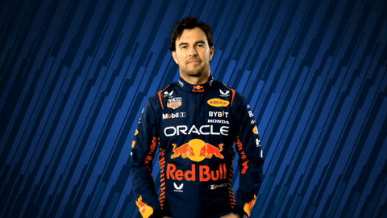

FORMULA 1
MENU


Sergio Michel Perez Mendoza (Guadalajara, Jalisco, Mexico; 26 de enero de 1990),
tambien conocido como Checo Perez, es un piloto de automovilismo mexicano.
Actualmente es miembro de la Escuderia Telmex.Desde 2021 es piloto de Red Bull
en Formula 1, resultando tercero en 2022.En diciembre, Perez firmo con Red Bull Racing para 2021,
luego de lograr su primera victoria de Formula 1 en el Gran Premio de Sakhir de 2020,
convirtiendose en el segundo mexicano despues de Pedro Rodriguez en ganar un Gran Premio.
Perez obtuvo su segundo triunfo de su carrera en el Gran Premio de Azerbaiyan de 2021,
el primero con Red Bull. Esa misma temporada consiguio 5 podios para el equipo.
En 2022 logro su primera pole position en Formula 1 en el Gran Premio de Arabia Saudita.
En mayo sumo su tercera victoria, despues de ganar el Gran Premio de Monaco y
en septiembre obtuvo su cuarto triunfo en el Gran Premio de Singapur de 2022.
